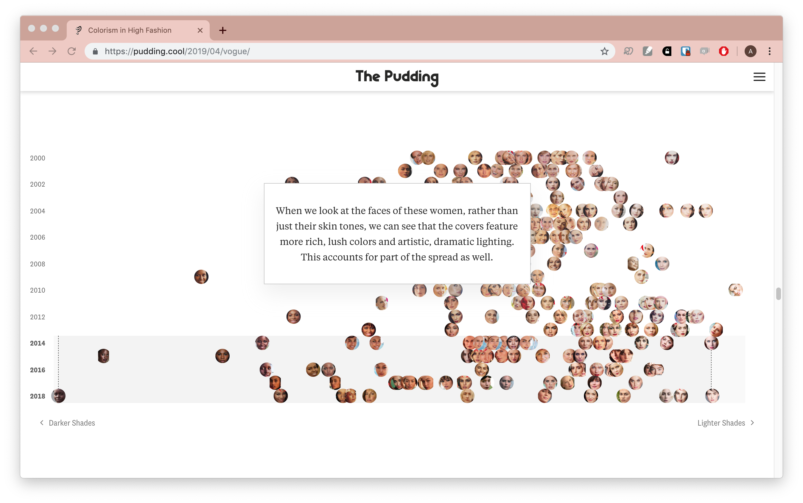
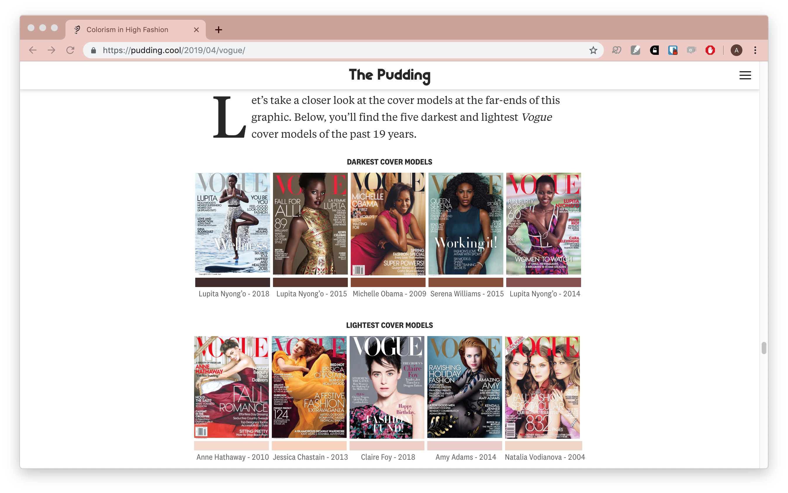
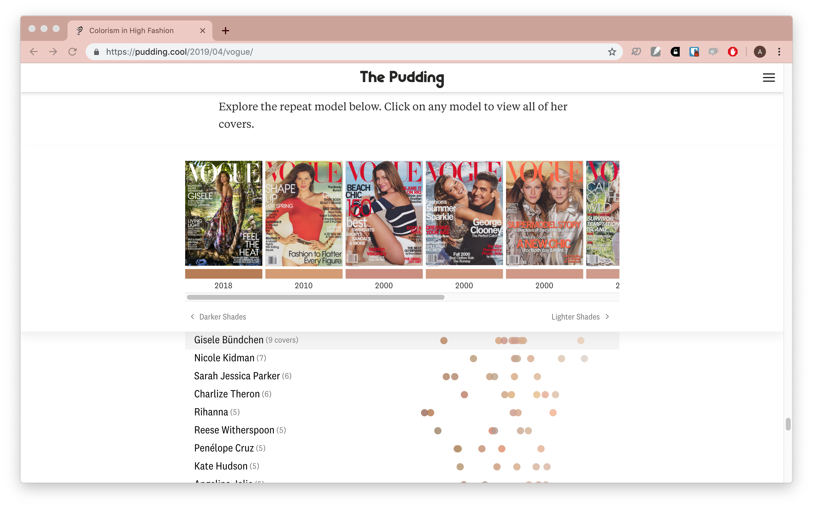
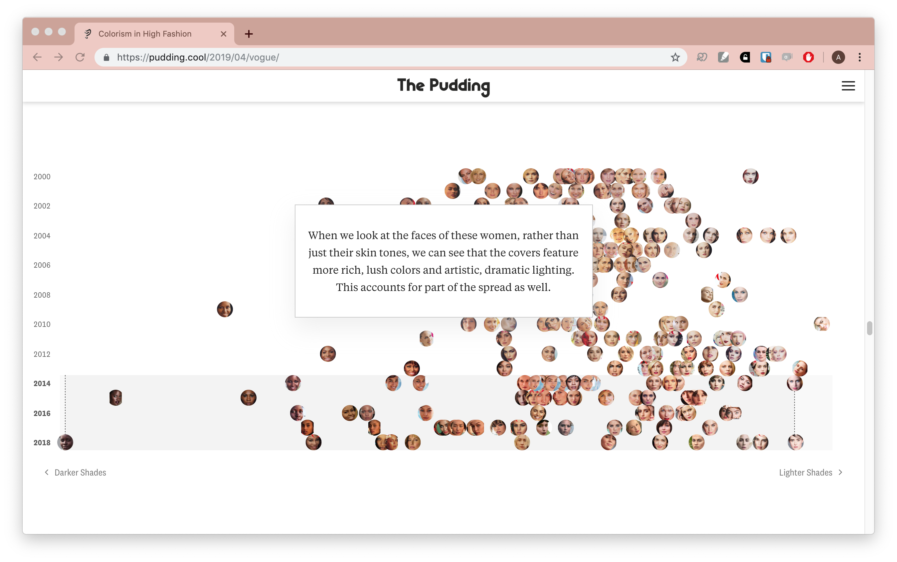
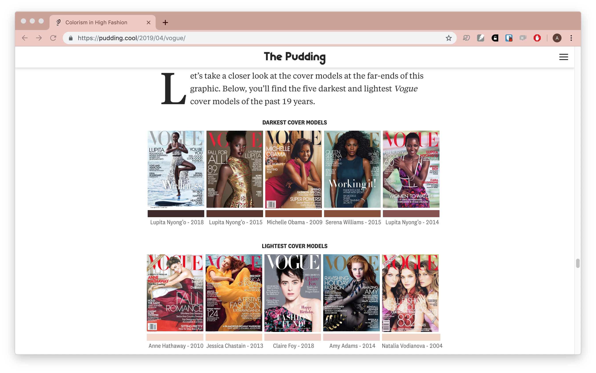
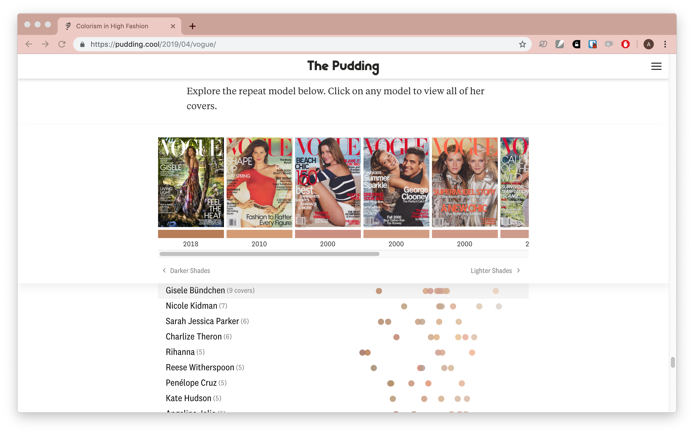
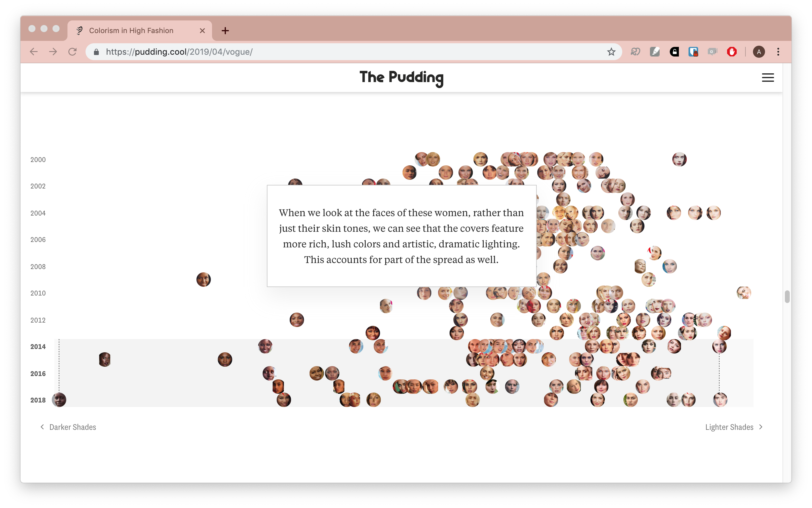
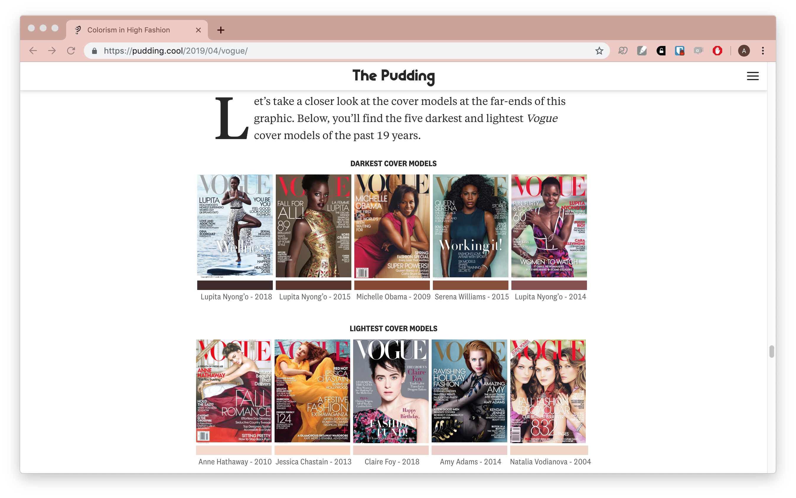
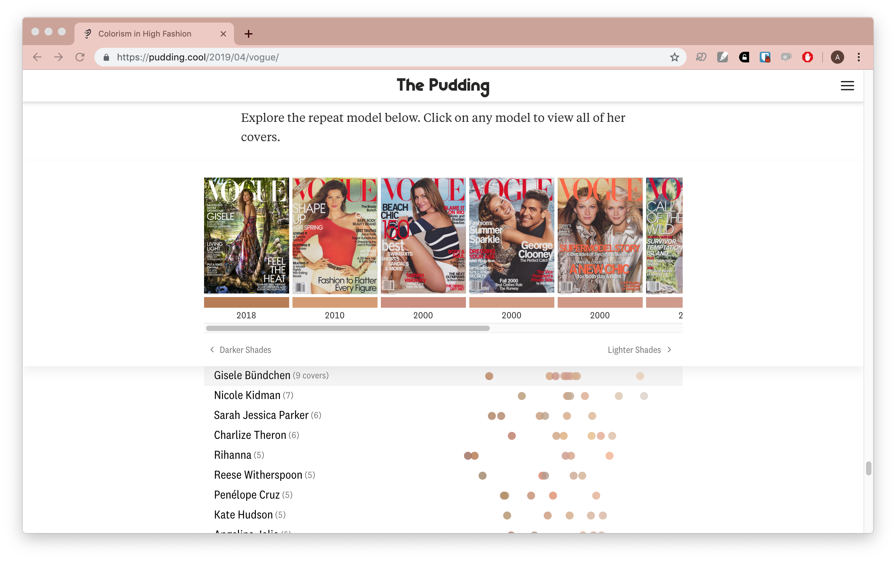

Screenshots

 

Vogue magazine has been a bastion of fashion for over a century. Over time, they have increased the diversity of the people gracing the cover by including people of different races and ethnicities. But, are they actually representing people of different shades similarly?
This story was brought to us by freelancer Malaika Handa. She collected and analyzed all the data and wrote the article. The design and some of the front-end code came from Jan Diehm.
